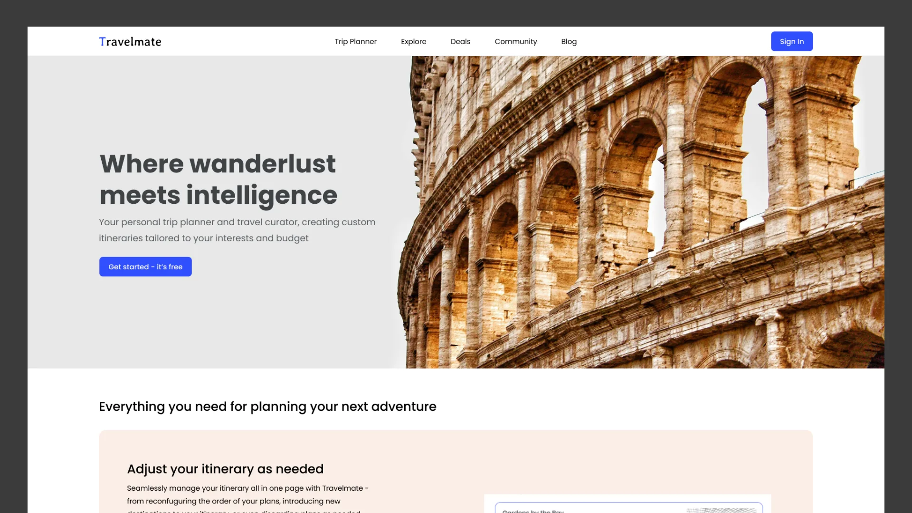

01About the project
TravelMate reimagines travel planning as an AI-powered web application, empowering adventurous explorers like Ruthresh Kumar to navigate the world with confidence. Our vision is to eliminate the stress and overwhelm of trip planning, allowing users to focus on creating unforgettable memories.
Here are some of the benefits of using an AI trip planner:
- Customization: AI planners take into account your interests, budget, travel style (adventure, relaxation, etc.) and even things like how much walking you're comfortable with to create a trip that's perfect for you.
- Time-saving: No more spending hours researching flights, hotels and activities. AI planners can do that for you in minutes.
- Inspiration: AI can find unique things you might not have discovered on your own based on current trends and your preferences.
02The problem
Conventional travel planning involves juggling multiple websites and resources, leading to : Time-consuming research and itinerary building. Difficulty in finding unique and personalized experiences. Lack of integrated booking platforms for a streamlined experience.
03The goal
Designing an efficient and personalized travel planning tool that streamlines the process without sacrificing the thrill of discovery.
- Effortless Planning: Simplify trip planning with AI-powered suggestions and automation.
- Personalized Itineraries: Craft custom itineraries tailored to Ruthresh Kumar's interests, budget, and travel style.
- Unique Discoveries: Uncover off-the-beaten-path adventures and authentic experiences.
- Seamless Booking: Book flights, accommodation, and activities directly within the web app.
- Local Immersion: Connect with local experiences and cultural offerings.
04Deliverables
- User Research
- Empathy map
- Persona
- Information Architecture
- Wireframe & Visual Design
05The Double Diamond approach
06Understanding the travellers
A thirst for adventure transcends age and background. Teenagers, backpackers, families, and professionals alike all share a desire to explore beyond the typical tourist path. The web interface provides a user-friendly experience for planning trips, regardless of location or device. Users can access TravelMate from laptops, tablets, or desktops, ensuring a convenient and efficient planning process.
07Qualitative research
TravelMate conducted qualitative research through in-depth interviews with 30 adventurous travelers aged 16-50. The focus was on understanding their motivations for adventure travel, past travel experiences, and the frustrations they encountered. Here's a glimpse into their qualitative insights:
- Thrill-Seeking: Participants expressed a strong desire for pushing boundaries and venturing beyond typical tourist experiences. Words like "adventure," "unique," and "off-the-beaten-path" were prevalent.
- Information Overload: While finding popular destinations was easy, participants found it difficult to unearth details about hidden gems, adventure activities, and local experiences. The feeling of information overload due to generic recommendations was a common theme.
- Booking Frustration: Juggling multiple platforms for research, flights, accommodation, and activities was a significant pain point. Participants described the booking process as time-consuming and tedious, desiring a streamlined solution.
- The Ideal Travel Companion: A recurring theme was the need for a user-friendly platform that would simplify the entire process. Participants envisioned features like: - Personalized recommendations: Tailored to interests, budget, and travel style. - Customizable itineraries: Incorporating exploration and exciting activities. - Integrated booking: A one-stop shop for booking everything.
08Quantitative research
TravelMate conducted a quantitative research survey with 30 adventurous travelers aged 16-50. The aim was to gather quantifiable data on their travel planning habits and preferences. Here are some key insights:
Time Investment:
- Average time spent planning a trip: 7 - 8 hours
- Percentage of participants who find planning a trip to be time-consuming: 63.3%
Information Channeling :
- Number of online platforms used for travel research : 4 (Travel blog/websits, Social media platforms, Travel agencies, Destination Specific Websites).
- Percentage of participants who find using multiple platforms frustrating : 73.4%
- Average no of people find detailed information about off-the-beaten-path destinations and adventure activities online : 76.6%
Limitations :
The data gathered from these 30 participants paints a preliminary picture of the challenges faced by adventurous travelers. Further research with a larger sample can solidify these findings and provide deeper insights. This data, combined with the qualitative research findings, can guide the development of TravelMate's functionalities to effectively address user needs and preferences.
09Empathy map
This empathy map outlines the thoughts, feelings, needs, and experiences of adventurous travelers who are the target audience for TravelMate.
10Persona
Ruthresh Kumar
- Demographics: Age group 18-35
- Budget: Flexible. Travel style: focuses on affordability and cultural experiences
- Needs: Ruthresh Kumar is a young, tech-savvy traveler who prioritizes affordability and cultural richness in his journeys. His ideal travel planning tool needs to be an all-encompassing, user-friendly platform that offers comprehensive search capabilities, customizable recommendations, and real-time updates. Features like itinerary sharing, integrated maps, and weather forecasts will enhance his travel experience, ensuring smooth and well-organized trips.
11Storyboard: how it works
Storyboarding is a visual planning tool that helps predict and refine how users will experience a product. (This focuses on the planning and improvement aspect)
12User flow
User flow creation streamlined my understanding of app navigation and task completion.
13Information architecture
The goal of IA is to create a user experience that is intuitive and efficient. Users shouldn't have to waste time hunting for information – they should be able to find what they need quickly and easily.
14Sketch
I tried sketching using CRAZY 8 method. The goal is to push beyond your first idea, frequently the least innovative, and to generate a wide variety of solutions to your challenge.
15UI style guide
- I have chosen Blue as my primary color, as Blue comes in a wide range of shades and tones, allowing you to evoke various emotions and functionalities within your design. Lighter blues can represent calmness and trust, while darker tones can suggest authority and security.
- I have used Sans-Serif typeface "Poppins" as poppins offers a range of weights (thin, light, regular, medium, semi-bold, bold, extra-bold) and includes italics. This allows you to create a clear hierarchy between headings, subheadings, body text, and buttons.